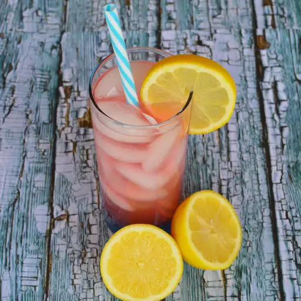

Old-Fashioned Pink Lemonade

Summer Thirst?
Quench your summer thirst with this delicious pink lemonade
Ingredients
- 9 cups water
- 2 cups white sugar
- 2 cups fresh lemon juice
- 1 cup cranberry juice, chilled
- ice as needed
Steps
- Combine water, sugar, lemon juice, and cranberry juice in a large pitcher; stir until sugar dissolves. Serve in tall glasses over ice.